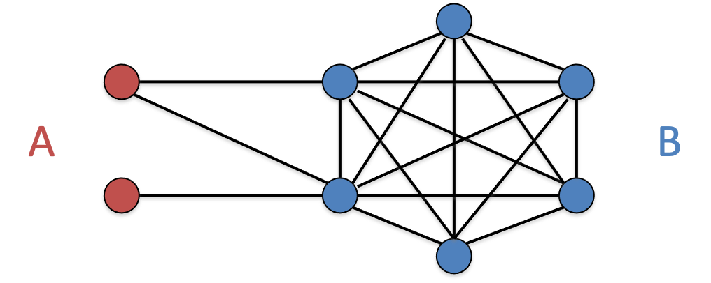

<< 返回本书主页<< Back to the afterword page
Jan. 2022
网络级联（network cascades）是传播学的重要理论。每个人是否接受一个新事物，受到周围人的极大影响，这进而影响了新事物在社会中的扩散。
如果我周围有更多人使用新产品
周围人的影响可以用两种模型在社会网络中进行模拟：两个模型都假设一开始有几个初用节点率先使用了
在门槛模型中，门槛值可以用协调博弈理论计算。我们考虑正在使用产品
| 节点w | |||
|---|---|---|---|
| 产品A | 产品B | ||
| 节点v | 产品A | a, a | 0, 0 |
| 产品B | 0, 0 | b, b | |
节点
时，节点
考虑产品
下图是一个形象的示意，采用

我们定义密度为
设网络中一个初用节点集
网络级联理论对于理解新产品推广很有帮助。课上，我们做了一个小练习：给定一个社会网络，选取哪些节点入手来推广新产品，会有最好的效果。
此外还有一个问题是，网络级联是否一定会终止？级联过程会不会震荡（改用
除了新产品的推广以外，网络级联理论还能用来解释行为的扩散。当周围有足够多的人采取一项行动的时候（尤其是比较冒险的行动），一个人才有足够的意愿或勇气这样做。这样，周围的人的行为就扩散到了ta身上。这个人采取行动后，它又会进一步在ta的邻居中间扩散。 这件事的反面是“沉默的螺旋”：由于每个人都不敢率先采取行动或公开意见，尽管很多人都或多或少希望一件事发生，但都保持了沉默。
在不同类型的网络级联中，弱关系和强关系发挥了不同的作用：
给定一个图的邻接矩阵
我们的模拟采用门槛模型。在每一步级联中，我们只需要关心：尚未激活的节点的邻居是什么情况，ta的邻居有多少人已被激活，这是否足以激活ta？
首先，读取文件，将邻接矩阵存储在numpy 2d-array A中，并要求用户输入门槛值q。代码略，与1.2.1.2类似。此外，我们还需要让用户输入初用节点集合，存储在列表变量users里：
xxxxxxxxxx161while True:2 S_input = input('请输入初用集（0–%i之间的自然数，用半角逗号分开）：' % (n-1))3 try:4 S_input = S_input.strip()5 S_list_str = S_input.split(',')6 S_list = []7 for S in S_list_str:8 S = S.strip()9 S = int(S)10 S_list.append(S)11 except:12 print('输入格式不正确。', end = '')13 continue14 break15
16users = S_list初始值的一个例子如下：
xxxxxxxxxx31>>> 请输入矩阵名称（net1.dat / net2.dat / net3/dat）：net2.dat2>>> 请输入初用集（0–16之间的自然数，用半角逗号分开）：7,10,123>>> 请输入门槛值（0–1之间的小数）：0.3
分析邻接矩阵，把每个节点的朋友有哪些存储在字典变量friends_all里，这方便我们逐节点分析邻居的激活情况。
xxxxxxxxxx81friends_all = {}2for i in range(n):3 friends_ind = []4 for j in range(n):5 edge = A[i][j]6 if edge == 1:7 friends_ind.append(j)8 friends_all[i] = friends_ind级联开始。每一步级联中，我们跳过已经在使用新产品的人，逐节点分析剩下的人的邻居。
xxxxxxxxxx91rnd = 02print('一开始的新用户：', end = '')3print(users)4while True:5 rnd += 16 new_users = []7 for i in range(n):8 if i in users:9 continue当节点i的邻居中，使用新产品的占比大于门槛值时，亦即len(friends_users) / len(friends_ind) >= q时，ta就会转而使用新产品。
xxxxxxxxxx61 friends_ind = friends_all[i] # all friends2 friends_users = [j for j in friends_ind if j in users] # friends who are using the new app3 influence = len(friends_users) / len(friends_ind) # the portion of friends who are using the new app4 if influence >= q: # willing to switch5 new_users.append(i)6 users += new_users当已激活节点无法再激活新的节点new_users == []，级联结束，网络达成稳定。
xxxxxxxxxx51 if new_users == []:2 print('级联结束。')3 break4 print('第%i轮的新用户：' % rnd, end = '')5 print(new_users)在上述初始值的例子里，级联过程输出如下
xxxxxxxxxx71>>> 一开始的新用户：[7, 10, 12]2>>> 第1轮的新用户：[4, 11, 13, 14, 16]3>>> 第2轮的新用户：[3, 6, 9, 15]4>>> 第3轮的新用户：[5, 8]5>>> 第4轮的新用户：[1]6>>> 第5轮的新用户：[0, 2]7>>> 级联结束。